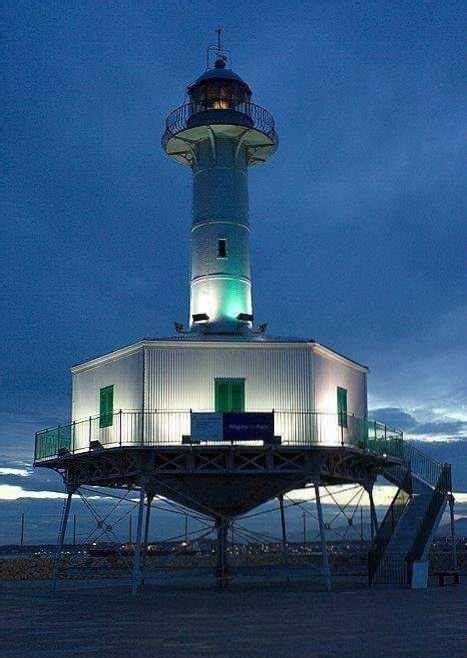
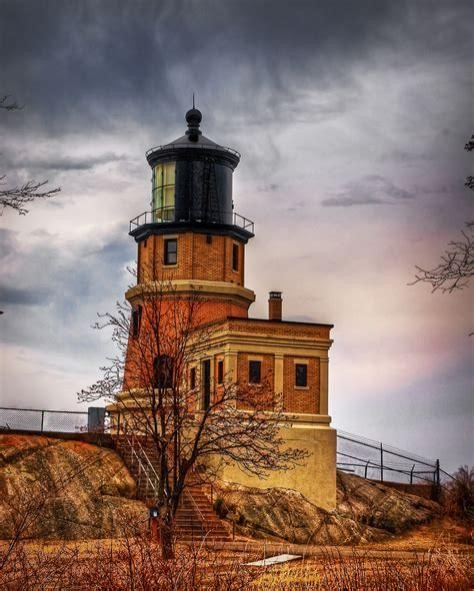
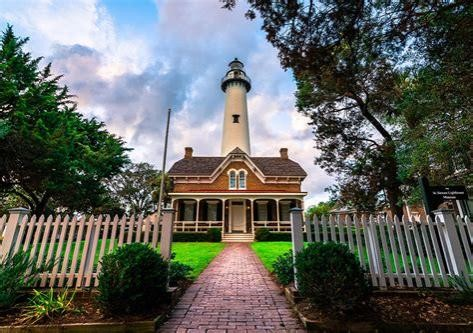
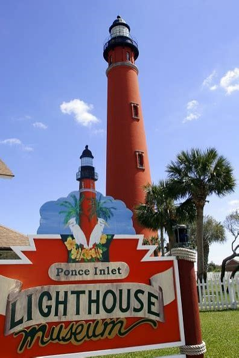
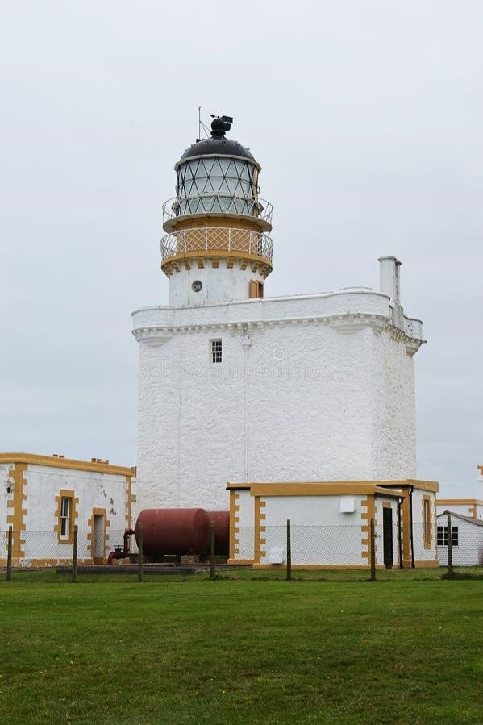

Introducción
Los museos de faros son lugares únicos donde se explora la historia marítima y el papel crucial de estas estructuras en la navegación. A continuación, se presentan cinco ejemplos destacados de museos de faros alrededor del mundo, cada uno con características y contextos históricos relevantes.
Museo Nacional del Faro (Staten Island, Nueva York, Estados Unidos)
Este museo se encuentra en el histórico Depósito General del Servicio de Faros de Estados Unidos, establecido en 1864. Ofrece exhibiciones sobre la evolución de los faros y la vida de los guardianes, destacando su colección de lentes Fresnel.

Museo del Faro de Beavertail (Jamestown, Rhode Island, Estados Unidos)
Ubicado en el tercer faro más antiguo de Estados Unidos, data de 1749. Este museo detalla la rica historia marítima de la región y alberga artefactos históricos relacionados con la navegación en la Bahía de Narragansett.

Museo del Faro de St. Augustine (St. Augustine, Florida, Estados Unidos)
Este museo combina historia marítima y arqueología, ofreciendo recorridos por el faro histórico y exhibiciones de la vida de los guardianes. Es una experiencia inmersiva en la historia de los faros de Florida.

Museo del Faro de Inubosaki (Chōshi, Prefectura de Chiba, Japón)
En el faro de Inubosaki, construido en 1874, este museo explora la ingeniería de los faros japoneses y su historia en la navegación marítima. El faro es uno de los más antiguos aún en funcionamiento en Japón.

Museo del Faro de Fraserburgh (Fraserburgh, Escocia)
También conocido como el "Museum of Scottish Lighthouses", está dedicado a la historia de los faros escoceses. Ubicado en el faro de Kinnaird Head, destaca por sus exhibiciones de lentes Fresnel y recorridos por el faro.
